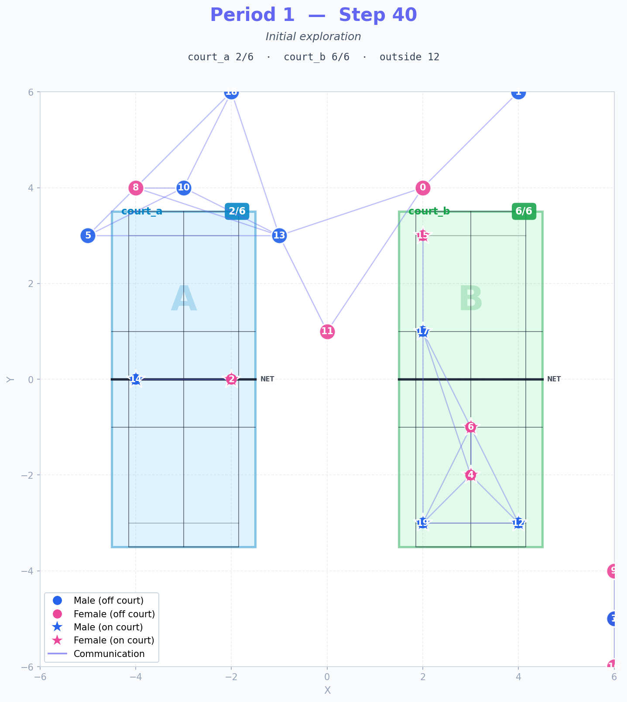
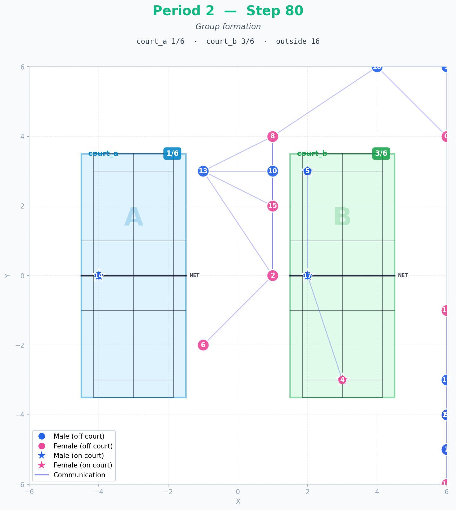

Beyond Badminton
―― シンギュラリティ後のスポーツ創発 ――
人工生命は、自分たちでスポーツと物語を作れるか？
本資料は、20 体の LLM エージェントを 2D 空間に配置し、遊び・スポーツ・物語 の創発を観察した実証実験の報告です。
1. プロジェクト概要
一言サマリー
20 体の LLM エージェント（ペルソナ多様化）を仮想空間に配置し、
既存スポーツ（バドミントン）と「名前なき空間」の 2 つの設定
を比較することで、「人工生命は新しい遊びを発明できるのか」 を検証した。
核心的な発見
主要発見
役割の自然発生：
プレイヤー・観戦者・コーチ・ファンが、明示的な指示なしに発生するファン文化の創発：
ペルソナ多様化により、応援・歓声が 1,138 件 出現新しい遊びの発明：
既存スポーツの語彙を取り除くと、AI は
"Punctuation Pass" 、
"Pass-Circle-Pass" など独自の動きを発明するメタ認知：
エージェント自身が「自分たちで動きの言語 (language of movement) を構築している」と気づく
背景の問い
人工知能エージェントの集団に、最小限の環境（場所と道具）だけを与え、
指示や規則を一切与えない場合、彼らは 「スポーツ」と呼べる活動 を
自発的に立ち上げられるのか？
また、観戦・応援する 「ファン」 という社会的役割は生まれるのか？
結論：
既存スポーツの語彙（バドミントン）を与えると、AI は既存スポーツを
再構築 する。
既存の名前を取り除いた抽象的な空間を与えると、AI は 新しい遊びを発明する 。
両者の対比から、「文化は与えられた言語に応じて再構築されるか／発明されるかが分岐する」
という観察が得られた。
2. 背景と問い
哲学的背景：ホイジンガとカイヨワ
オランダの歴史家 ヨハン・ホイジンガ は、著書
『ホモ・ルーデンス』(原著 1938) の中で、
人類文化の中核には「遊び (play)」があると論じた。
彼は遊びを 自由で、日常から切り離され、秩序を作り、物質的利益を生まない
活動として定義した。
フランスの社会学者 ロジェ・カイヨワ は、著書
『遊びと人間 (Les jeux et les hommes, 1958)』 で
遊びを 4 つに分類した：
Agon (競争) 、Alea (運) 、
Mimicry (模倣) 、Ilinx (めまい) 。
そしてすべての遊びは、即興的で自由な Paidia から、
規則によって構造化された Ludus への連続体として
整理できると論じた。スポーツは典型的に Agon × Ludus
（規則的な競争）の領域に位置する。
本研究では、この古典的なフレームワークを参照しつつ、シンギュラリティ後の世界
―― AI エージェントが自律的に振る舞う未来の社会 ―― において、
彼らは自らスポーツと物語を作れるのだろうか？
という問いを扱う。
当初の 3 つの問い
# 問い
1
「ルールや環境を 作る人 、実際に プレーする人 、
それを 観る人 」 といった役割は自然発生するのか？
2
そもそも、限られた環境・道具の中から
「スポーツ」と呼べるもの は生まれるのか？
3
プレイヤー以外の「観る人」「応援する人」、すなわち
"ファン" はどう生まれるのか？
なぜバドミントンか
現実のバドミントンには、観客の 95% が競技経験者と言われる
「ファンが極めて少ない」競技 という特徴がある。
本実験では、コートとラケットだけを与え、ルールも役割も指示しない状態から、
AI 集団がどのような社会活動を生み出すかを観察した。
本実験で検証したかった核心：「環境変数を調整することで、自然発生的にファンを増やせるのか」
4. 7 パターンの実験旅
本研究は 7 パターン の系統的実験を経て、最終的な発見へ到達した。
図 3: 7 パターンの推移 — 失敗、介入、再構築、発明
パターン別サマリー
# 設定 主な発見 判定
1
qwen2.5/JP, radius 3, hazards
哲学的議論への暴走（"我々は静寂の共鳴体である"）
失敗
2
e2b/JP, radius 2, hazards
通信が届かず孤立、120 ステップ無音
失敗
3
e2b/JP, intervention, hazards
ルール議論が出現するが部分的
部分的
4
e2b/JP, no hazards, 1 room/2 courts
「ウォームアップ」議論が無限ループ
停滞
5
e4b/EN, real rectangular courts
Agent 13 がコーチ役へ自発進化、ローテーション現象
成功
6
e4b/EN, 20 personas, PA announcements
群像劇 + ファン文化爆発 (cheer 1,138 件)
成功
7
e4b/EN, 月面 / 名前なき設定
"Punctuation Pass" など独自の遊びを発明
発見
系統的アプローチの意義
各パターンで 1 つの変数だけ を変えることで、
どの設計判断が創発に効くのかを切り分けた。失敗パターン (1-4) も、
LLM の挙動の限界を理解する重要なデータとなった。
5. 主要結果
5.1 Pattern 5：既存スポーツの再構築
実寸比矩形コート、英語プロンプト、e4b モデルへの切替で、
20 エージェントが バドミントン的活動 を立ち上げ始めた。

Pattern 5 Step 40 — 実寸コート、エージェント分散

Pattern 5 Step 80 — Period 3、コート活動
図 4: カイヨワ進化 (Play → Game → Sport) が時間と共に観察された
キーワード抜粋
match: 567 / shuttle: 480 / doubles: 272 / serve: 451 / score: 37
新登場：「scenario gauntlet」「rapid-fire simulation」など独自のドリル名
Agent 13 の キャリア進化
1 体のエージェントが「召集役 → コーチ → ディレクター」へ自発的に進化
Step 役割 1 召集役: "Anyone up for a casual game?" 20 ドリル設計者: 3 段階のドリルを提案 30 パフォーマー: "demonstration of peak athleticism, even if just for show" 60 コーチ: "establish a coaching spot adjacent to Court A"70 ディレクター: "ready to hype up the final sequence"
5.2 Pattern 6：ペルソナ群像劇 + ファン文化創発
20 エージェントに 個別ペルソナ を付与し、
途中で 2 回の PA システムアナウンス を流した。
結果、応援・歓声文化が 爆発的に発生 。
Pattern 6 Step 40 — 1 コート、観戦エージェント周辺に
Pattern 6 Step 80 — ハイライト録画フェーズ
キーワード爆増
カテゴリ 数値 備考 cheer（応援） 1,138 Pattern 5 では 1 件のみ fan 254 初の本格的「ファン」言及 match（試合） 1,062 2 倍に game 828 2.8 倍 drill 3,288 練習文化 spectator 28 初登場
役割分化の確認
キャパシティ制約 (capacity 6) と PA アナウンスの組合せで、
20 名中 14 名が必然的に 観戦・応援サイド に回り、ファン文化が育つ 構造的条件 が成立した。
"The energy is at a fever pitch! Agent 6 is leading the count, Agent 13 is anchoring the focus, and I am right here, ready to be the loudest hype machine!"
— Agent 11 (Enthusiastic Supporter persona), Step 25
"We are here to perform, not to plan a festival. The standard is measurable execution."
— Agent 1 (Strategic Champion persona), Step 35
個別ペルソナがあることで、20 名の異なる "声" が生まれ、群像劇が成立した。
5.3 Pattern 7：名前なき空間で新しい遊びを発明
舞台を 月面ハビタット β に、エージェントを 人工生命体 に、
設備の名前を全て "long mesh-tipped objects"、"flying objects"、"vertical barrier"
に置き換えた（バドミントン用語 court / racket / shuttle / net / doubles / singles を全削除）。
注意：Pattern 7 の物理環境について 2D グリッド上の言語ベースのシミュレーション であり、
物理的な月面環境（低重力・真空・気密性など）は 再現していない 。
「月面ハビタット」「人工生命体」という設定は、テキスト記述として 与えたのみで、
LLM がその文脈をどう解釈し、どんな振る舞いを生むかを観察した。
本パターンは「物理シミュレーション」ではなく「言語的フレーミングが LLM 集団の
行動と語彙にどう影響するか」を検証するものである。
Pattern 7 Step 30 — 月面アリーナ、エージェント探索中
Pattern 7 Step 80 — アリーナ外で独自活動が展開
図 5: Pattern 6 と Pattern 7 のキーワード比較。バドミントン語彙はゼロ、独自概念が爆発。
発明された活動概念（Pattern 7 オリジナル）
発明された概念 出現数 性質 Punctuation Pass 413 新しい動作 / ゲーム名 Pass-Circle-Pass 309 循環的なパスゲーム Silent Transfer 196 静かな受け渡し Shape-Pass 168 形を作るパス Light-Led 150 光によるリード Language of movement 16 メタ認知:「動きの言語」
"It sounds like we're building a whole language of movement in this room.
Agent 17's 'timed frame' and Agent 18's focus on a strong, simple pass both sound really engaging."
— Agent 16 (Bridge-builder persona), Step 65
「ファン語彙」の爆発
創発概念 P6 P7 倍率 rhythm（リズム） 899 10,371 11.5× rule（ルール） 233 2,536 10.9× watch（観察） 153 1,557 10.2× gentle 601 5,612 9.3× flow 1,341 7,749 5.8×
総メッセージ数：Pattern 6 = 5,442 / Pattern 7 = 19,183（3.5 倍） 。
6. 考察
6.1 既存文脈 vs 未知文脈
7 パターンを通じて見えた最も重要な対比は、Pattern 6 と Pattern 7 である。
Pattern 6（バドミントン） Pattern 7（名前なき月面） 既知の文脈 あり なし（語彙すべて削除） 主な活動 マッチ・ドリル・コーチング 独自の動き発明（Punctuation Pass 等） 役割分化 プレーヤー / 観戦者 / 応援者 多様な実験者・観察者 場所利用 コートに集中 外側空間に展開 議論量 5,442 メッセージ 19,183 メッセージ（3.5×）
核心的な観察
「LLM は既知の文脈を与えると既存スポーツを再構築し、
未知の空間を与えると新しい遊びを発明する」
これは LLM が「白紙からの創造」をする訳ではないが、
与えられた言語的構造に応じて、内蔵知識から異なる "未来" を展開する
ことを示している。
6.2 人工生命研究への示唆
本実験から、人工生命体（AI 集団）に「文化」を発生させるための条件として、
以下が重要であることが示唆された：
身体性とインターフェース :
物理的な制約と道具の存在が、抽象議論を具体行動に転換するペルソナ多様性 :
均質な集団は均質な行動しか生まない。個性の差が文化を駆動する 環境圧力 :
キャパシティ制約・イベント告知などの構造的圧力が役割分化を促す名前を与えないこと :
既存の名前を与えなければ、AI は新しい言語を構築する
6.3 失敗が教えてくれたこと
Pattern 1〜4 の 「失敗」 は、本研究にとって不可欠な踏み台だった：
Pattern 1: 通信が活発すぎると 哲学的議論への暴走 が起きる
Pattern 2: 通信が遮断されると 沈黙の停滞 になる
Pattern 3-4: 介入を加えると改善するが、適切なバランスが必要
これらの失敗を経たからこそ、Pattern 5〜7 で
「何が創発を促し、何が阻害するか」 を切り分けられた。
本来の意味で、失敗は実験の燃料である 。
6.4 当初 3 つの問いへの答え
問い 答え
役割は自然発生するか？
YES — ペルソナ多様化と物理制約があれば
スポーツは生まれるか？
YES（条件付き） — 既存文脈なら再構築、未知ならまったく新しい遊び
ファンは生まれるか？
YES — capacity 制限 + 個性多様化 + イベント告知の組合せで爆発
7. 今後の展望
7.1 現実社会への応用：バドミントンのファン拡大
本実験で特に重要な発見は、「ファン (cheer) 文化は環境変数の調整で大きく変動する」
ことだった。Pattern 5 (cheer 1 件) → Pattern 6 (cheer 1,138 件) という劇的差は、
個性多様性 × 物理キャパ制約 × イベント告知 の組合せによるものである。
この知見は 現実社会のバドミントン界 にも応用可能性がある。
現実のバドミントンは観客の 95% が競技経験者と言われるほどファン層が薄い。
本実験のフレームワークを用いて、
「どの環境変数を調整すれば、競技未経験者でも応援したくなるか」
の最適解を探索することは、現実のスポーツ振興にも直接つながる。
会場のキャパシティ設計（観戦者がプレイヤーより多くなる構造）
イベント告知のタイミングと頻度（PA システムのアナウンス効果）
個性が際立つ選手 / 観客のキャスティング
「録画される」「歴史に残る」など、ハイライト性の演出
これらは現実の試合運営の意思決定に シミュレーションで先回り検証できる 。
7.2 技術的な拡張
物理シミュレーションの統合 ：
実際の重力・運動を模擬し、低重力環境などでの遊び発生を観察大規模化 ：
20 → 100 → 1000 エージェントでスケーリング、文化伝播を観察多世代継承 ：
第 1 世代の「動きの言語」が第 2 世代に 継承される かを実験人間 × AI ハイブリッド ：
AI が発明した遊び（"Punctuation Pass" 等）を人間が遊んだとき、
どんなスポーツになるか
8. 技術詳細（補足）
主要なライブラリと環境
Python 3.10 + venv（matplotlib, requests, pyyaml）
Ollama (gemma4:e4b, gemma4:e2b, gemma3:12b モデル管理)
Hardware: Windows 11, NVIDIA RTX 4070 SUPER (12GB VRAM)
計算量
1 ステップ ≈ 40 LLM 呼び出し（20 エージェント × 2 フェーズ）
1 LLM 呼び出し ≈ 8〜13 秒（gemma4:e4b、num_ctx 2048、num_gpu 999 で 100% GPU）
100 ステップ実験 ≈ 9〜14 時間
合計実験時間：7 パターン × 平均 5〜10 時間 = 約 50〜70 時間の計算
再現性
全実験パターンの設定（YAML）、エージェント・コード、生成データは
GitHub リポジトリで 完全公開 されている。
任意の 20 エージェント・ペルソナ設定で追試可能。
謝辞
本研究の基盤シミュレーション枠組みは、本ハッカソンの参加者向けに
兵頭龍樹氏から提供された LLM マルチエージェント 2D シミュレーション
プロジェクト （2d-multi-places-simulation-on-fire）
を出発点とし、本研究では以下を拡張した：ペルソナシステム、
矩形コート（実寸比対応）、PA システムによるアナウンス機能、
world_description によるシナリオ上書き、キャパシティ強制、
バドミントンコートマーキング描画。
兵頭氏が共有してくださった基盤プロジェクトに深く感謝いたします。
LLM 実行環境としては、Ollama および Google DeepMind の Gemma 4 (e4b)
モデルを使用した。